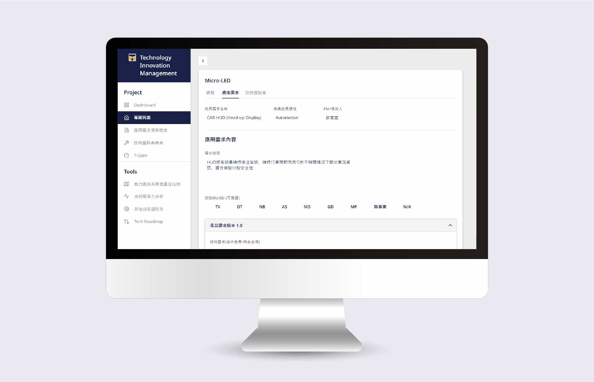

Technology Innovation Management
New project management platform
TIM stands for 'Technology Innovation Management', which is a management platform specially made for brand new projects. Before every new product is launched, it has to go through a process of careful evaluation to ensure its profitability. This web-based platform was designed to make records of the projects iteration from ideation to marketing. The target audience is R&D dept in AUO.
I was responsible for designing functions below:
1. Using keywords and date to search for existing project from a long list
2. Creating a new project with details to fill out, including team members, technique requirements, budget, etc.
3. Documenting version history
This platform ends up being widely used by many employees in the company across departments.